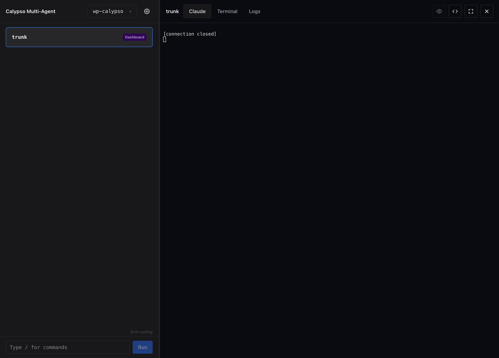

Give Shipyard a GitHub issue or Linear ticket. It creates a branch, spins up a sandbox, and Claude starts building. You go do something else.

Paste a URL. Shipyard handles the branch, the worktree, the sandbox, and the prompt.
Run up to 9 agents in parallel. Each one isolated. Each one working.
Live terminal for every agent. Check in when you want, or don't.
Idle sandboxes stop themselves. Resources come back. No babysitting.
Built-in proxy routes your dev server per branch. Click Preview, see the result.
Point it at your local checkout. No clone, no config, no migration.
A macOS app that turns tickets into working code. Give it a GitHub issue or Linear ticket, and it spins up an isolated Claude Code agent on its own branch.
macOS, Docker Desktop with the sandbox plugin, and Node 22+. That's it.
Free and open source. Bring your own Claude Code credentials.
Any git repo. Shipyard symlinks your local checkout — no cloning, no migration.
Each task gets its own Docker sandbox and git worktree. Nothing bleeds between branches.